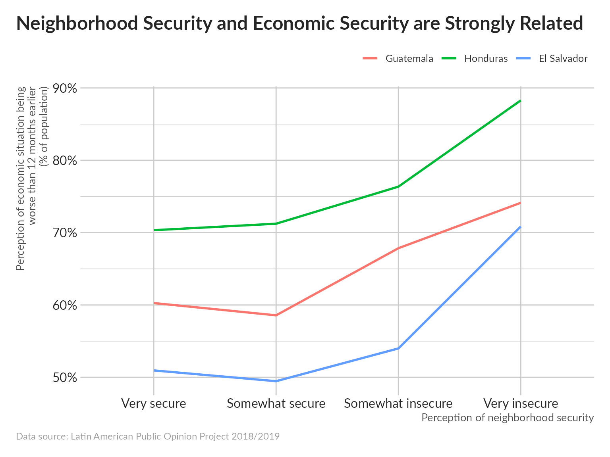
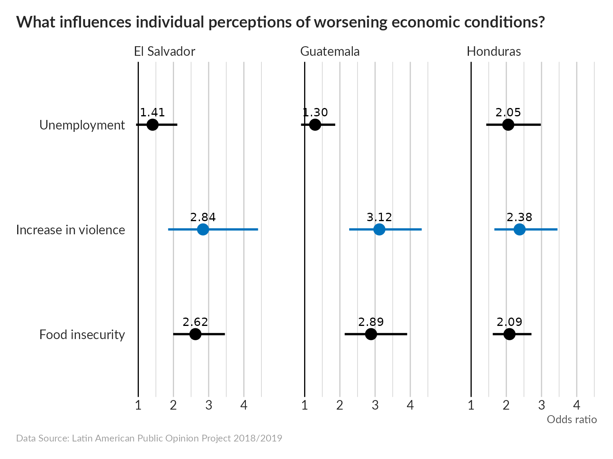
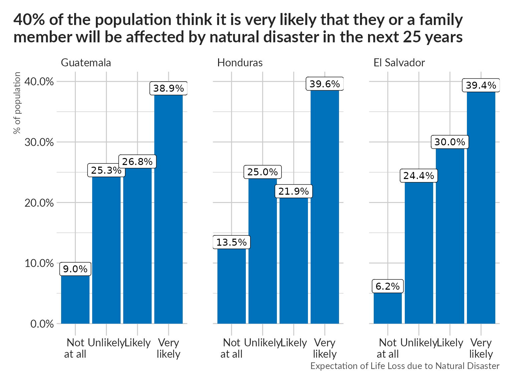

Poor safety conditions are strongly correlated with poor economic outcomes.
pdata <-
data %>%
filter(!is.na(soct2), !is.na(aoj11)) %>%
group_by(pais, aoj11) %>%
summarize(p = mean(soct2 == "Peor"), .groups = "drop")
pdata %>%
ggplot(aes(aoj11, p, color = pais, group = pais)) +
geom_line(size = 1) +
scale_y_continuous(labels = scales::label_percent()) +
scale_x_discrete(labels = c("Very secure", "Somewhat secure", "Somewhat insecure", "Very insecure")) +
unhcRstyle::unhcr_theme() +
labs(x = "Perception of neighborhood security",
y = "Perception of economic situation being\nworse than 12 months earlier\n(% of population)",
title = "Neighborhood Security and Economic Security are Strongly Related",
caption = "Data source: Latin American Public Opinion Project 2018/2019")
Next we run a logistic regression to quantify the magnitude of this effect.
mdata <-
data %>%
transmute(country = pais,
urban = ur == "Urbano",
age = as.numeric(as.character(q2)), sex = q1,
edu =
ed %>%
fct_recode("0" = "Ninguno", "18" = "18+") %>%
compose(as.numeric, as.character)(),
marital_status =
case_when(q11n == "Soltero" ~ "Single",
q11n == "Casado" | q11n == "Unión Libre (acompañado)" ~ "Couple",
TRUE ~ "Other"),
hhsize = fct_recode(q12c, "20" = "20+") %>% compose(as.numeric, as.character)(),
num_child = fct_lump_prop(q12bn, .1),
unemployed = ocup4a == "Está buscando trabajo activamente",
wealth_percentile = q10new,
food_insecure = fs2 == "Sí",
perc_econ = idio2 == "Peor",
perc_safety = pese2 == "Mayor")
mdata <-
mdata %>%
group_by(country) %>%
mutate(wealth_percentile = ridit(wealth_percentile)) %>%
ungroup()
per_country <-
mdata %>%
split(.$country) %>%
map_dfr(~glm(perc_econ~., data = select(., -country), family = "binomial") %>%
tidy(exponentiate = TRUE, conf.int = TRUE),
.id = "country")
per_country %>%
filter(term %in% c("unemployedTRUE", "perc_safetyTRUE", "food_insecureTRUE")) %>%
ggplot(aes(estimate, term)) +
geom_pointrange(aes(xmin = conf.low, xmax = conf.high, color = term == "perc_safetyTRUE"),
size = 1) +
geom_text(aes(label = scales::label_number(accuracy = .01)(estimate)),
vjust = -1) +
geom_vline(xintercept = 1) +
scale_y_discrete(labels = c("Food insecurity", "Increase in violence", "Unemployment")) +
scale_color_manual(values = c("TRUE" = "#0072BC", "FALSE" = "black")) +
facet_wrap(vars(country))+
labs(title = "What influences individual perceptions of worsening economic conditions?",
subtitle = NULL,
y = NULL, x = "Odds ratio",
caption = "Data Source: Latin American Public Opinion Project 2018/2019") +
unhcRstyle::unhcr_theme() +
theme(axis.text = element_text(size = 2),
plot.title = element_text(size = 15),
plot.subtitle = element_text(size = 12),
legend.position = "none",
panel.grid.major.x = element_line(color = "#cbcbcb"),
panel.grid.major.y = element_blank()) 
Interpretation hint: the odds of 2.84 for an increase in violence in El Salvador, for example, mean that someone who has experienced an increase in violence in their neighborhood in the last 12 months will be 2.84 times more likely to report that their personal economic situation has deteriorated over the last 12 months compared to someone who has not experienced an increase in violence in their neighborhood.
The regression was run controlling for heterogeneity caused by age, gender, location, marital status, household size, and wealth percentile.
pdata <-
data %>%
filter(!is.na(drk1)) %>%
count(pais, drk1) %>%
group_by(pais) %>%
mutate(p = n/sum(n))
pdata %>%
ggplot(aes(drk1, p)) +
geom_col(fill = "#0072BC") +
geom_label(aes(label = scales::label_percent(accuracy = .1)(p))) +
scale_x_discrete(labels = c("Not\nat all", "Unlikely", "Likely", "Very\nlikely")) +
scale_y_continuous(labels = scales::label_percent()) +
facet_wrap(vars(pais)) +
unhcRstyle::unhcr_theme() +
labs(x = "Expectation of Life Loss due to Natural Disaster", y = "% of population",
title = "40% of the population think it is very likely that they or a family \nmember will be affected by natural disaster in the next 25 years")